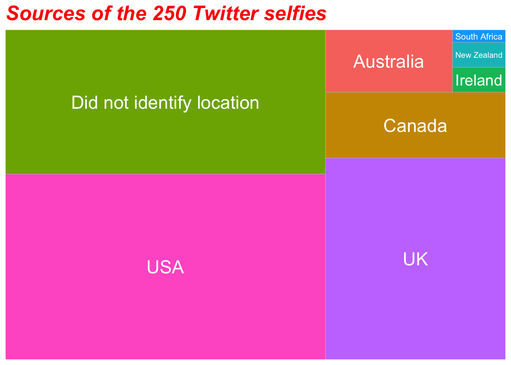

You’ll find more body shots, more cleavage, more sexual suggestiveness via hair display and posing, but as much cuteness, in White women’s selfies on Twitter, compared to what you may find in Chinese women’s selfies on Weibo.
Cross-cultural Comparisons of ‘Selfie’-presentation—A content analysis
Hongtao Hao 1
hhao@iu.edu
1 The Media School, Indiana University Bloomington
1.Key Question
Do Chinese women’s selfies on Weibo and White women’s selfies on Twitter differ?
2. Background
Beauty of women in the US was constructed in terms of the body, whereas East Asian women care more about their facial features 1.
“Sexual/sex kitten” appeared significantly more frequently in American ads than in East Asian ads.2
Studies on cuteness in Asian context focused on adults, whereas those in Western context focused on infants.3

Note: Click here to see a full list of icon/photo attibutions.
3. Methods
Data collection
| N | 250 | 250 |
| Sampling frame | 26,733 images | 8,866 images |
| Time period | Dec 31, 2017 to Jan. 1, 2019 (CUT4) | Same |
| Source | OSoMe’s Enhanced Access API | Weibo Advanced Search |
Measurements
| Variables | Detail | Initial.ICR | Final.ICR |
|---|---|---|---|
| Shot size | 1.00 | 0.90 | |
| Mirror selfies | 0.91 | 1.00 | |
| Body exposure | Cleavage | 0.76 | 0.85 |
| Midriff | 1.00 | 0.93 | |
| Buttock | 1.00 | 0.90 | |
| Thigh | 1.00 | 0.94 | |
| Sexual suggestiveness | Hair | 0.82 | 0.79 |
| Pose | 1.00 | 0.78 | |
| Self-touching | 0.91 | 0.83 | |
| Cuteness | 0.75 | 0.77 |
4. Results
4.1 Descriptive Statistics

4.2 Results
H1, Shot size  5
5
Chi Square(1, N = 500) = 4.20, p = .040: White women post more body shots than Chinese women.
H2, Mirror selfie  6
6
Chi Square(1, N = 500) = .62, p = .430: White women did not take more mirror selfies than Chinese women7.
H4(a), Cleavage  8
8
Chi Square(2, N = 500) = 43.41, p < .001: White women displayed a significantly higher level of cleavage/breasts exposure than Chinese women.
H4(b), Midriff  9
9
t (282.28) = 3.02, p = .003, d = .27: White women exhibited a higher degree of midriff exposure than Chinese women.
H4(c), Buttock  10
10
t (498) = .43, p = .669, d = .04: White women did not show a higher degree of buttock exposure than Chinese women.
H4(d), Thigh11  12
12
Chi Square(1, N = 500) = .22, p = .640: White women did not show a higher degree of thigh exposure than Chinese women.
H5 (a), Hair display 
Chi Square(2, N = 500) = 32.17, p < .001: White women displayed a significantly higher level sexual suggestiveness through hair display than Chinese women.
H5 (b), Pose  13
13
Chi Square(1, N = 500) = 8.51, p = .004: White women showed a higher level sexual suggestiveness via pose than Chinese women.
H5(c), Self-tourching14 
Chi Square(1, N = 500) = 6.85, p = .009. However, the direction was the opposite: Chinese women exhibited more sexual suggestiveness through self-touching than White women.
RQ1, Cuteness 
t (479.69) = -1.56, p = .119, d = .14, Chinese women did not show a higher level of cuteness than White women.
References & Footnotes
Frith, Shaw & Cheng, 2005; Staley & Zhan, 2011; Wu & Lang, 2018↩
Frith et al., 2005↩
Little, 2012; Sprengelmeyer et al., 2009↩
Coordinated Universal Time. This is to control for the effects of weather and seasons on selfie taking and sharing.↩
Icon made by Vitaly Gorbachev from www.flaticon.com↩
Icon made by Good Ware from www.flaticon.com↩
Chinese women took more mirror selfies but the difference was not significant.↩
Icon made by Pixel perfect from www.flaticon.com↩
Icon made by monkik from www.flaticon.com↩
Icon made by Flat icons from www.flaticon.com↩
“Slightly visible” and “completely visible” were collapsed into “visible”.↩
Icon made by Pixelmeetup from www.flaticon.com↩
Icon made by Freepik from www.flaticon.com↩
“Slightly suggestive” and “extremely suggestive” were combined into “sexually suggestive”.↩